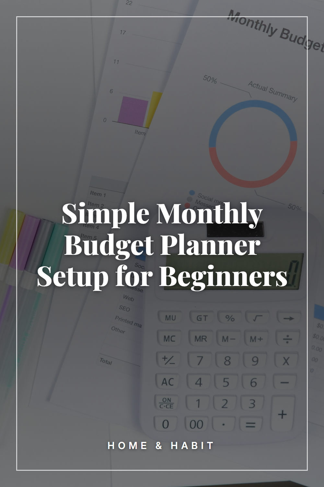

Simple Monthly Budget Planner Setup for Beginners

A simple monthly budget planner setup for beginners: choose a format, list your income and bills, and track spending in one clear layout. Save this guide to budgeting for beginners for your next monthly review.
Pick one place for your budget
Choose a notebook, a printable planner or a simple spreadsheet and stick with it. Having a single home for your numbers makes it easier to find and update them each month.
Write down your monthly income
List every source of money you expect this month, such as pay, side income or regular transfers. Use the amounts you actually receive rather than a best guess.
List your fixed bills
Add the costs that stay about the same each month: rent or mortgage, utilities, phone, insurance and subscriptions. Note the due date next to each one.
Add your variable spending
Make a line for costs that change, like groceries, transport, dining out and household items. Past statements can help you fill these in.
Create categories that fit your life
Group lines into a few clear categories so the page stays readable. Fewer categories are easier to keep up than a long, detailed list.
Leave a line for savings and goals
Set aside a row for any savings or goal you choose, and decide the amount yourself. Placing it near the top keeps it visible.
Fill in planned and actual columns
Use one column for what you plan to spend and one for what you actually spent. Comparing the two over time shows where your plan and your habits differ.
Pick a regular check-in day
Choose a weekly or twice-monthly time to log spending and update the page. A short, repeating habit works better than a rare long session.
Review at month end and reset
At the end of the month, look back at each category and adjust next month's lines. Start a fresh page and carry over only what still applies.